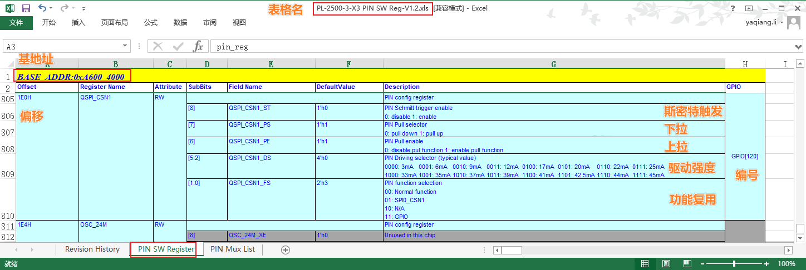
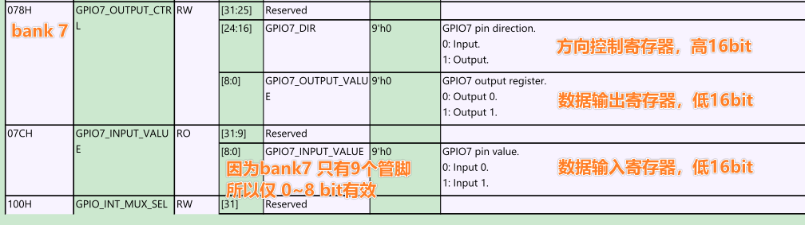
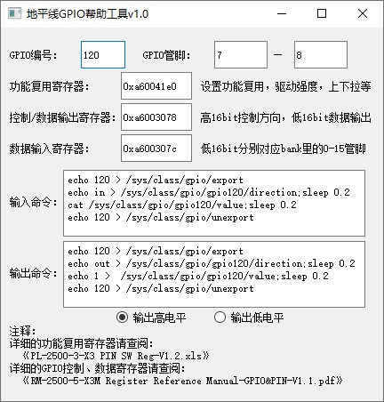
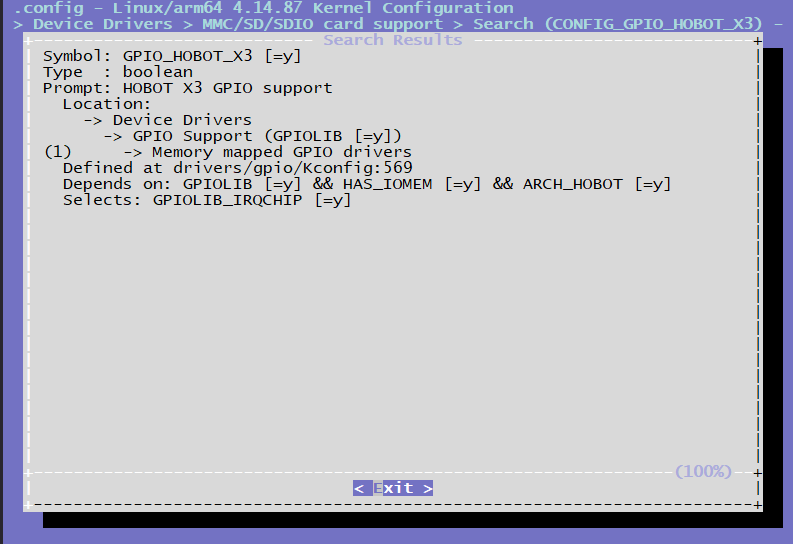

4.3.5. GPIO调试指南
X3 芯片共有121个IO功能管脚，每个管脚都可以配置工作在gpio模式下，但是需要注意和其他功能管脚的复用关系。
4.3.5.1. 管脚查询
IO管脚的复用和配置可以查阅《PL-2500-3-X3 PIN SW Reg-V1.2.xls》 和《RM-2500-5-X3M Register Reference Manual-GPIO&PIN-V1.1.pdf》。
在 《PL-2500-3-X3 PIN SW Reg-V1.2.xls》可以比较直观的查询到管脚的上电默认状态、复用、驱动能力、上下拉、施密特触发配置。
在 《RM-2500-5-X3M Register Reference Manual-GPIO&PIN-V1.1.pdf》文档中查询对应管脚的gpio寄存器信息。
示例
以查询gpio120号管脚的复用、方向控制、数据寄存器地址为例进行说明：
功能复用寄存器说明：
打开 《PL-2500-3-X3 PIN SW Reg-V1.2.xls》，选择
PIN SW Register的数据表。第一行会标明功能复用的基地为
0xA6004000。在
GPIO列找到GPIO[120]，这一项对应的信息即是管脚120的上电默认状态、复用、驱动能力、上下拉、施密特触发配置。如下图所示。

找到以上配置项后，基地址加上偏移的值即该管家的复用控制寄存器，例如
GPIO120的复用寄存器为0xA6004000 + 0x1E0 = 0xA600410E0。配置功能复用寄存器时，建议先把该值先读出来，然后设置想要设置的对应bit后再写回。例如配置
GPIO120为GPIO模式，则只设置0xA600410E0寄存器的低两位为0x3，保持其他启动强度、上下拉、斯密特触发配置不变，除非你明确知道你需要对它们也做修改。
GPIO控制和数据寄存器：
打开 《RM-2500-5-X3M Register Reference Manual-GPIO&PIN-V1.1.pdf》，本文档分两个主要章节，
GPIO章节是描述管脚的控制寄存器、输出数据寄存器、输入数据寄存器和管脚电压域配置寄存器（偏移为0x170 和 0x174的两个寄存器是管脚电压域配置寄存器）。Pin Group章节与寄存器复用《PL-2500-3-X3 PIN SW Reg-V1.2.xls》表内容一样。控制、数据寄存器的基地址在每页表格的第一行会显示，为
BASE_ADDR:0xA600_3000，查询到的偏移地址加上本基地址就是对应的完整寄存器地址。旭日X3M总共有
120个可用的管脚，分成7个bank，每个bank最多16个管脚，控制和数据寄存器以一个bank为一个控制单元。例如GPIO120的bank为120除以16后取整为7，在bank中的管脚编号为120对16取余数为8。由此我们就可以找到对应的寄存器地址为如下图所示。GPIO120的寄存器即以下图中寄存器GPIO7_xxx中对应的bit8（从bit0开始计算）。

GPIO帮助工具
通过以上章节，相信你已经具备自主查询、设置各管脚的配置的能力。针对旭日X3M芯片，地平线还提供了一个小软件帮助用户快速完成以上寄存器的查询，并且提供管脚设置的帮助命令，可以从 地平线GPIO帮助工具下载使用。
工具的界面如下图所示，用户可以控制输入 GPIO编号 或者 GPIO管脚 来查询管脚的各种寄存器地址，并且生成gpio功能的帮助命令，命令说明请查看 GPIO用户空间使用说明了解详情。

4.3.5.2. 驱动代码
drivers/gpio/gpio-hobot-x3.c # gpio驱动源文件
内核配置
CONFIG_GPIO_HOBOT_X3

内核DTS配置
/* arch/arm64/boot/dts/hobot/hobot-xj3.dtsi */
gpios: gpio@0xA6003000 {
compatible = "hobot,x3-gpio";
reg = <0 0xA6003000 0 0x100>;
gpio-controller;
#gpio-cells = <2>;
gpio-ranges = <&pinctrl 0 0 121>;
interrupts = <0 54 4>;
interrupt-parent = <&gic>;
interrupt-controller;
#interrupt-cells = <2>;
};
备注： hobot-xj3.dtsi中的节点主要声明一些寄存器、中断的resource，均为soc共有特性，和具体电路板无关，一般情况下不用修改。
4.3.5.3. GPIO使用
Kernel Space
DTS配置
GPIO设备树节点的属性命名方式一般为names-gpios或names-gpio，举例如下：
/* arch/arm64/boot/dts/hobot/hobot/hobot-x3-sdb.dtsi */
&usb_id {
status = "okay";
id-gpio = <&gpios 65 GPIO_ACTIVE_HIGH>;
host-rst-gpio = <&gpios 115 GPIO_ACTIVE_HIGH>;
host-exrst-gpio = <&gpios 38 GPIO_ACTIVE_LOW>;
};
驱动代码接口
/* include/linux/gpio.h */
/* 申请GPIO */
int gpio_request(unsigned gpio, const char *label);
/* GPIO初始化为输出。并设置输出电平*/
int gpio_direction_output(unsigned gpio, int value);
/* GPIO初始化为输入 */
int gpio_direction_input(unsigned gpio);
/* 获取GPIO的电平 */
int gpio_get_value(unsigned int gpio);
/* 设置GPIO的电平 */
void gpio_set_value(unsigned int gpio, int value);
/* 释放GPIO */
void gpio_free(unsigned gpio)
/* 申请GPIO中断，返回的值可以传给request_irq和free_irq */
int gpio_to_irq(unsigned int gpio);
X3J3 GPIO IRQ
X3 GPIO共有121个pin，硬件中断数量为4个，使用时通过GPIO模块寄存器的设置可以将121个pin中的最多4个pin映射到4个IRQ中断上，映射过程由GPIO驱动管理，通过gpio_to_irq申请GPIO IRQ号，4个irq都被申请完，后续申请都会失败，irq映射管理的代码如下：
/* drivers/gpio/gpio-hobot-x3.c */
/* 初始化irq映射表 */
void init_irqbank*struct x3_gpio *gpo) {
int i = 0;
for (i = 0; i < GPIO_IRQ_BANK_NUM; i++) {
gpo->irqbind[i] = GPIO_IRQ_NO_BIND;
}
}
/* request irq并更新映射表 */
int request_irqbank(struct x3_gpio *gpo, unsigned long gpio) {
int i = 0, index = GPIO_IRQ_NO_BIND;
index = find_irqbank(gpo, gpio);
if(index == GPIO_IRQ_NO_BIND) {
for (i = 0; i < GPIO_IRQ_BANK_NUM; i++) {
if(gpo->irqbind[i] == GPIO_IRQ_NO_BIND) {
gpo->irqbind[i] = gpio;
index = i;
break;
}
}
} else {
dev_err(gpo->dev, "gpio(%ld) has be binded\n", gpio);
return GPIO_IRQ_NO_BIND;
}
return index;
}
/* free gpio并更新映射表 */
void release_irqbank(struct x3_gpio *gpo, unsigned long gpio) {
int index = GPIO_IRQ_NO_BIND;
index = find_irqbank(gpo, gpio);
if(index != GPIO_IRQ_NO_BIND) {
gpo->irqbind[index] = GPIO_IRQ_NO_BIND;
}
}
备注： X3 GPIO在Kernel Space的接口都是Linux的标准接口，更多使用方法请参考Documentation/gpio/consumer.txt。
User Space
控制接口
/sys/class/gpio/export #用户空间可以通过写入gpio号申请将gpio的控制权导出到用户空间，比如 echo 42 > export
/sys/class/gpio/unexport # 和export相反
/sys/class/gpio/gpiochip0 # gpio控制器
调用接口
使用export导出gpio的控制权以后会有路径/sys/class/gpio/gpio42/，路径下有如下属性：
direction：表示GPIO端口方向，读取为”in”或”out”，写入”in”或者”out”可以设置输入或输出
value：表示GPIO的电平，0为低电平，1为高电平，如果GPIO配置为输出，则value值可写
edge：表示中断触发方式，有”none” “rising” “falling” “both” 4种类型，”none”表示GPIO不为中断引脚，”rising”表示引脚为上升沿触发的中断，”falling”表示引脚为下降沿触发的中断，”both”表示引脚为边沿触发的中断。
调用示例
以下示例演示导出 JTG_TRSTN 管脚，设置为输出模式，输出高电平，最后反导出。
echo 4 > /sys/class/gpio/export
echo out > /sys/class/gpio/gpio4/direction
echo 1 > /sys/class/gpio/gpio4/value
# echo 0 > /sys/class/gpio/gpio4/value
echo 4 > /sys/class/gpio/unexport
调试接口
如果在内核配置中打开了Linux Kernel的CONFIG_DEBUG_FS 选项，并且挂载了debugfs文件系统
mount -t debugfs none /sys/kernel/debug
则可以通过如下节点查看GPIO的申请列表。
root@x3dvbx3-hynix1G-2666:~# cat /sys/kernel/debug/gpio
gpiochip0: GPIOs 0-120, parent: platform/a6003000.gpio:
gpio-42 ( |sysfs ) in hi
gpio-64 ( |cd ) in lo IRQ
gpio-65 ( |id ) in hi IRQ
gpio-100 ( |? ) out lo
gpio-120 ( |? ) out hi
root@x3dvbx3-hynix1G-2666:~#
备注： X3 GPIO在User Space的接口都是Linux的标准接口，更多使用方法请参考Documentation/gpio/sysfs.txt